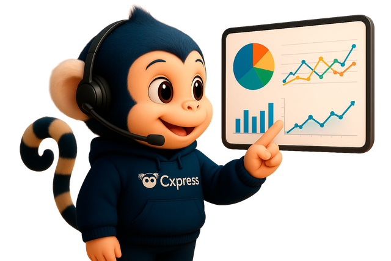

01
Cada llamada llega a quien sabe resolverla
La distribución inteligente organiza la fila, da instrucciones claras y dirige cada contacto al colaborador más adecuado. Menos transferencias y menos “le paso con el área”.
